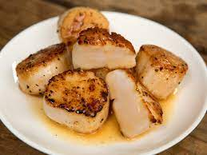

Scallops
Return to home page

This is a quick recipe to make Cheesy Tarragon Bay Scallops
Try this bay scallops recipe served in cheese sauce and puff pastry cups.
Nice presentation, and when served over a puff pastry shell, elegant enough for a special dinner.
The Parmesan and tarragon give you a rich and flavorful cheese sauce that's the perfect complement to the scallops.
Ingredients
- 4 puff pastry shells
- 2 tbsp butter
- 3/4 sliced mushrooms
- 2 tbsp minced shallot
- 2 tbsp flour
- 1/4 dry white wine
- 2 tbsp sherry
- 1 tsp lemon juice
- 1 tsp Dijon mustard
- 1/2 shredded cheese
- 1 tbsp chopped tarragon
- black pepper